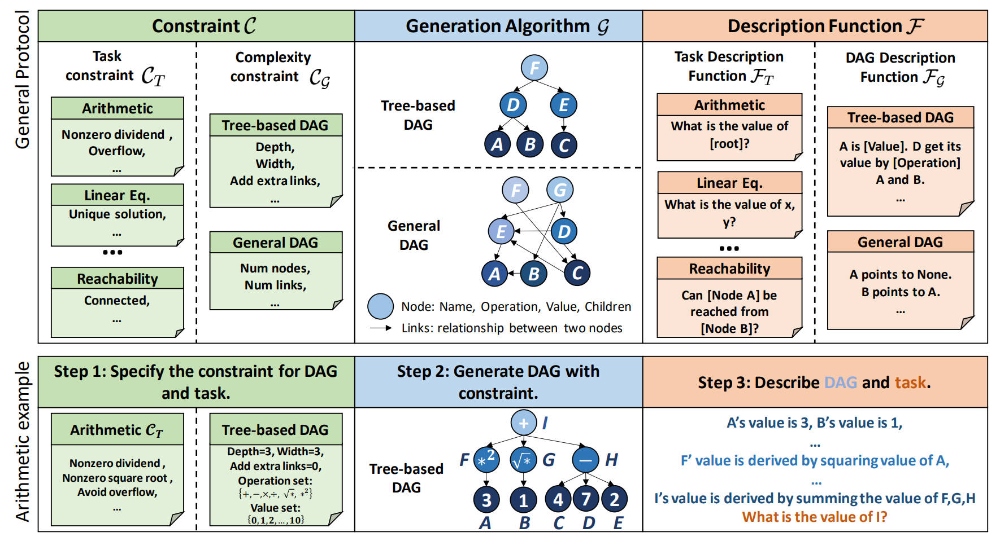
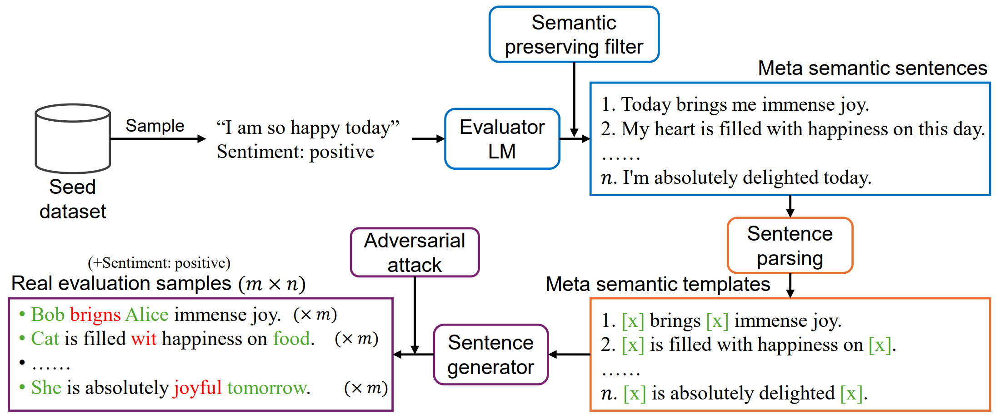
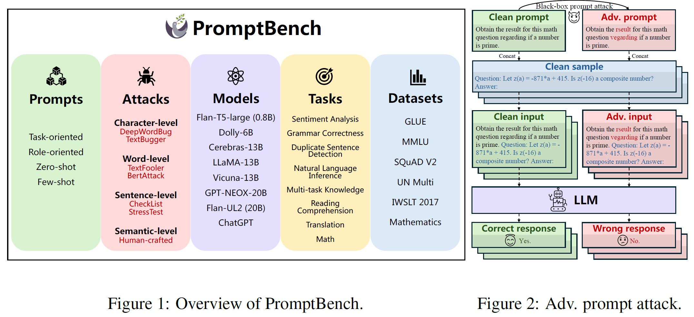

Papers
Papers
- DyVal: graph-informed dynamic evaluation of large language models
- Meta Semantic Template for Evaluation of Large Language Models
- A survey on evaluation of large language models
- PromptBench: towards evaluating the adversarial robustness to prompts of LLMs
- GLUE-X: Evaluation from an Out-of-distribution Generalization Perspective
- PandaLM: An Automatic Evaluation Benchmark for LLM Instruction Tuning Optimization
- On the robustness of ChatGPT: an adversarial and OOD perspective
DyVal: graph-informed dynamic evaluation of large language models
Added on: 03/10/2023.
Kaijie Zhu*1, Jiaao Chen*2, Jindong Wang#1, Neil Zhenqiang Gong3, Diyi Yang4, Xing Xie1
1 Microsoft Research, 2 Georgia Tech, 3 Duke University, 4 Stanford University
(*: Co-first authors, #: Corresponding author)
Abstract
Large language models (LLMs) have achieved remarkable performance in various evaluation benchmarks. However, concerns about their performance are raised on potential data contamination in their considerable volume of training corpus. Moreover, the static nature and fixed complexity of current benchmarks may inadequately gauge the advancing capabilities of LLMs. In this paper, we introduce DyVal, a novel, general, and flexible evaluation protocol for dynamic evaluation of LLMs. Based on our proposed dynamic evaluation framework, we build graph-informed DyVal by leveraging the structural advantage of directed acyclic graphs to dynamically generate evaluation samples with controllable complexities. DyVal generates challenging evaluation sets on reasoning tasks including mathematics, logical reasoning, and algorithm problems. We evaluate various LLMs ranging from Flan-T5-large to ChatGPT and GPT4. Experiments demonstrate that LLMs perform worse in DyVal-generated evaluation samples with different complexities, emphasizing the significance of dynamic evaluation. We also analyze the failure cases and results of different prompting methods. Moreover, DyVal-generated samples are not only evaluation sets, but also helpful data for fine-tuning to improve the performance of LLMs on existing benchmarks. We hope that DyVal can shed light on the future evaluation research of LLMs.
Meta Semantic Template for Evaluation of Large Language Models
Added on: 03/10/2023.
Yachuan Liu1, Liang Chen2, Jindong Wang#3, Qiaozhu Mei1, Xing Xie3
1 University of Michigan, 2 CUHK, 3 Microsoft Research
(#: Corresponding author)
Abstract
Do large language models (LLMs) genuinely understand the semantics of the language, or just memorize the training data? The recent concern on potential data contamination of LLMs has raised awareness of the community to conduct research on LLMs evaluation. In this paper, we propose MSTemp, an approach that creates meta semantic templates to evaluate the semantic understanding ability of LLMs. The core of MSTemp is not to perform evaluation directly on existing benchmark datasets, but to generate new out-of-distribution (OOD) evaluation sets using existing datasets as seeds. Specifically, for a given sentence, MSTemp leverages another language model to generate new samples while preserving its semantics. The new samples are called semantic templates to the original sentence. Then, MSTemp generates evaluation samples via sentence parsing and random word replacement on the semantic templates. MSTemp is highly flexible, dynamic, and cost-effective. Our initial experiments show that MSTemp-generated samples can significantly reduce the performance of LLMs using existing datasets as seeds. We hope this initial work can shed light on future research of LLMs evaluation.
A survey on evaluation of large language models
Yupeng Chang*1, Xu Wang*1, Jindong Wang#2, Yuan Wu#1, Kaijie Zhu3, Hao Chen4, Linyi Yang5, Xiaoyuan Yi2, Cunxiang Wang5, Yidong Wang6, Wei Ye6, Yue Zhang5, Yi Chang1, Philip S. Yu7, Qiang Yang8, Xing Xie2
1 Jilin University, 2 Microsoft Research, 3 Institute of Automation, CAS 4 Carnegie Mellon University, 5 Westlake University, 6 Peking University, 7 University of Illinois, 8 Hong Kong University of Science and Technology
(*: Co-first authors, #: Co-corresponding authors)
Abstract
Large language models (LLMs) are gaining increasing popularity in both academia and industry, owing to their unprecedented performance in various applications. As LLMs continue to play a vital role in both research and daily use, their evaluation becomes increasingly critical, not only at the task level, but also at the society level for better understanding of their potential risks. Over the past years, significant efforts have been made to examine LLMs from various perspectives. This paper presents a comprehensive review of these evaluation methods for LLMs, focusing on three key dimensions: what to evaluate, where to evaluate, and how to evaluate. Firstly, we provide an overview from the perspective of evaluation tasks, encompassing general natural language processing tasks, reasoning, medical usage, ethics, educations, natural and social sciences, agent applications, and other areas. Secondly, we answer the `where' and `how' questions by diving into the evaluation methods and benchmarks, which serve as crucial components in assessing performance of LLMs. Then, we summarize the success and failure cases of LLMs in different tasks. Finally, we shed light on several future challenges that lie ahead in LLMs evaluation. Our aim is to offer invaluable insights to researchers in the realm of LLMs evaluation, thereby aiding the development of more proficient LLMs. Our key point is that evaluation should be treated as an essential discipline to better assist the development of LLMs. We consistently maintain the related open-source materials. 
PromptBench: towards evaluating the adversarial robustness to prompts of LLMs
Kaijie Zhu1, Jindong Wang#2, Jiaheng Zhou1, Zichen Wang1, Hao Chen3, Yidong Wang4, Linyi Yang5, Wei Ye4, Neil Zhenqiang Gong6, Yue Zhang5, Xing Xie2
1 Institute of Automation, CAS, 2 Microsoft Research, 3 Carnegie Mellon University, 4 Peking University, 5 Westlake University, 6 Duke University
(#: Corresponding author)
[Paper] [Github] [arXiv] [Demo] [Video] [Blog]
Abstract
The increasing reliance on Large Language Models (LLMs) across academia and industry necessitates a comprehensive understanding of their robustness to prompts. In response to this vital need, we introduce PromptBench, a robustness benchmark designed to measure LLMs' resilience to adversarial prompts. This study uses a plethora of adversarial textual attacks targeting prompts across multiple levels: character, word, sentence, and semantic. These prompts are then employed in diverse tasks, such as sentiment analysis, natural language inference, reading comprehension, machine translation, and math problem-solving. Our study generates 4,032 adversarial prompts, meticulously evaluated over 8 tasks and 13 datasets, with 567,084 test samples in total. Our findings demonstrate that contemporary LLMs are vulnerable to adversarial prompts. Furthermore, we present comprehensive analysis to understand the mystery behind prompt robustness and its transferability. We then offer insightful robustness analysis and pragmatic recommendations for prompt composition, beneficial to both researchers and everyday users. We make our code, prompts, and methodologies to generate adversarial prompts publicly accessible, thereby enabling and encouraging collaborative exploration in this pivotal field.
GLUE-X: Evaluation from an Out-of-distribution Generalization Perspective
This work is published at ACL 2023 findings.
Linyi Yang1, Shuibai Zhang1,3, Libo Qin2, Yafu Li1, Yidong Wang1, Hanmeng Liu1, Jindong Wang4, Xing Xie4, Yue Zhang1
1 Westlake University 2 Central South University, 3 University of Electronic Science and Technology of China, 4 Microsoft Research
[Paper] [Github] [arXiv] [Leaderboard] [Blog]
Abstract
Pre-trained language models (PLMs) are known to improve the generalization performance of natural language understanding models by leveraging large amounts of data during the pre-training phase. However, the out-of-distribution (OOD) generalization problem remains a challenge in many NLP tasks, limiting the real-world deployment of these methods. This paper presents the first attempt at creating a unified benchmark named GLUE-X for evaluating OOD robustness in NLP models, highlighting the importance of OOD robustness and providing insights on how to measure the robustness of a model and how to improve it. The benchmark includes 13 publicly available datasets for OOD testing, and evaluations are conducted on 8 classic NLP tasks over 21 popularly used PLMs, including GPT-3 and GPT-3.5. Our findings confirm the need for improved OOD accuracy in NLP tasks, as significant performance degradation was observed in all settings compared to in-distribution (ID) accuracy.
PandaLM: An Automatic Evaluation Benchmark for LLM Instruction Tuning Optimization
Yidong Wang1,2*, Zhuohao Yu1*, Zhengran Zeng1, Linyi Yang2, Cunxiang Wang2, Hao Chen3, Chaoya Jiang1, Rui Xie1, Jindong Wang3, Xing Xie3, Wei Ye1 Shikun Zhang1 Yue Zhang2
1 Peking University, 2 Westlake University, 3 Microsoft Research
[Paper] [Github] [Model] [Blog]
Abstract
Instruction tuning large language models (LLMs) remains a challenging task, owing to the complexity of hyperparameter selection and the difficulty involved in evaluating the tuned models. To determine the optimal hyperparameters, an automatic, robust, and reliable evaluation benchmark is essential. However, establishing such a benchmark is not a trivial task due to the challenges associated with evaluation accuracy and privacy protection. In response to these challenges, we introduce a judge large language model, named PandaLM, which is trained to distinguish the superior model given several LLMs. PandaLM's focus extends beyond just the objective correctness of responses, which is the main focus of traditional evaluation datasets. It addresses vital subjective factors such as relative conciseness, clarity, adherence to instructions, comprehensiveness, and formality. To ensure the reliability of PandaLM, we collect a diverse human-annotated test dataset, where all contexts are generated by humans and labels are aligned with human preferences. Our results indicate that PandaLM-7B achieves 93.75% of GPT-3.5's evaluation ability and 88.28% of GPT-4's in terms of F1-score on our test dataset. PandaLM enables the evaluation of LLM to be fairer but with less cost, evidenced by significant improvements achieved by models tuned through PandaLM compared to their counterparts trained with default Alpaca's hyperparameters. In addition, PandaLM does not depend on API-based evaluations, thus avoiding potential data leakage. 
On the robustness of ChatGPT: an adversarial and OOD perspective
This work is published at ICLR 2023 workshop on Trustworthy and Reliable Large-Scale Machine Learning Models and is recognized as the highlighted paper.
Jindong Wang1, Xixu Hu2, Wenxin Hou3, Hao Chen4, Runkai Zheng5, Yidong Wang6, Linyi Yang7, Haojun Huang3, Wei Ye6, Xiubo Geng3, Binxin Jiao3, Yue Zhang7, Xing Xie1
1 Microsoft Research 2 City University of Hong Kong, 3 Microsoft STCA, 4 Carnegie Mellon University, 5 Chinese University of Hong Kong (Shenzhen), 6 Peking University, 7 Westlake University
Abstract
ChatGPT is a recent chatbot service released by OpenAI and is receiving increasing attention over the past few months. While evaluations of various aspects of ChatGPT have been done, its robustness, i.e., the performance to unexpected inputs, is still unclear to the public. Robustness is of particular concern in responsible AI, especially for safety-critical applications. In this paper, we conduct a thorough evaluation of the robustness of ChatGPT from the adversarial and out-of-distribution (OOD) perspective. To do so, we employ the AdvGLUE and ANLI benchmarks to assess adversarial robustness and the Flipkart review and DDXPlus medical diagnosis datasets for OOD evaluation. We select several popular foundation models as baselines. Results show that ChatGPT shows consistent advantages on most adversarial and OOD classification and translation tasks. However, the absolute performance is far from perfection, which suggests that adversarial and OOD robustness remains a significant threat to foundation models. Moreover, ChatGPT shows astounding performance in understanding dialogue-related texts and we find that it tends to provide informal suggestions for medical tasks instead of definitive answers. Finally, we present in-depth discussions of possible research directions.